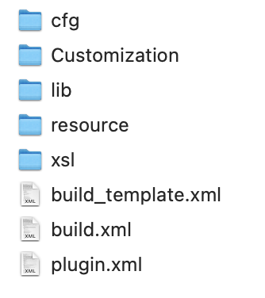

DITA PDF 样式plugin制作¶
本文介绍开发DITA-OT样式plugin的方法。oXygen 发布内容的引擎，也是基于DITA-OT。本文以MacOS系统，并使用HomeBrew安装了DITA-OT为例来说明样式表的开发。其他系统或其他dita-ot的安装形式，插件开发大同小异，只是安装方式或调用方式有所不同。
org.dita.pdf2插件¶
找到插件所在位置¶
HomeBrew安装 dita-ot文件夹所在位置，一般在如下几个位置。
/usr/local/Cellar/
/usr/local/opt/
/usr/local/bin/
以笔者系统为例：
在Finder->Go->Go to Folder，然后输入
/usr/local/Cellar/
在Cellar文件夹中按照下方路径，继续浏览
/dita-ot/3.6.1/libexec/plugins/org.dita.pdf2
文件夹结构¶

项目 |
含义 |
|---|---|
cfg |
存放样式的主要定义信息，其中还包括 |
Customization |
存放用户自定义的样式信息 |
lib |
存放 Java 可执行程序 |
resource |
|
xsl |
存放 XSLT stylesheet |
创建PDF plugin¶
在plugins文件中，创建
com.company.pdf文件夹。Java的命名传统，例如你的公司叫deepdok，可以用 com.deepdok.pdf来命名。还可以进一步增加说明，例如用户手册 (ug)的样式，可以写成。com.deepdok.pdf.ug
模仿
org.dita.pdf的文件夹结构分别创建cfg,fo等文件夹和文件夹。在
cfg文件夹中，新建catalog.xml，并在其中输入如下代码<?xml version="1.0" encoding="UTF-8"?> <catalog prefer="system" xmlns="urn:oasis:names:tc:entity:xmlns:xml:catalog"> <uri name="cfg:fo/attrs/custom.xsl" uri="fo/attrs/custom.xsl"/> <uri name="cfg:fo/xsl/custom.xsl" uri="fo/xsl/custom.xsl"/> </catalog>
在
fo/attrs创建 custom.xsl文件，并输入如下内容<?xml version="1.0"?> <xsl:stylesheet xmlns:xsl="http://www.w3.org/1999/XSL/Transform" xmlns:fo="http://www.w3.org/1999/XSL/Format" version="2.0"> </xsl:stylesheet>将 custom.xsl 复制到 fo/xsl中。虽然名字一样，但是用途不一样，以后通过 custom.xsl (attrs) 和 custom.xsl(xsl)来区分。
在
com.company.pdf中新建plugin.xml，并输入如下内容<?xml version='1.0' encoding='utf-8'?> <plugin id="com.company.pdf"> <require plugin="org.dita.pdf2" /> <feature extension="dita.conductor.transtype.check" value="custpdf" /> <feature extension="dita.transtype.print" value="custpdf" /> <feature extension="dita.conductor.target.relative" file="integrator.xml" /> </plugin>
dita.conductor.transtype.check和dita.transtype.print的值为custpdf，意思是使用custpdf作为转换类型来调用。在
com.company.pdf中新建integrator.xml，并输入如下内容<?xml version='1.0' encoding='utf-8'?> <project name="com.company.pdf"> <target name="dita2custpdf.init"> <property name="customization.dir" location="${dita.plugin.com.company.pdf.dir}/cfg"/> <property name="pdf2.i18n.skip" value="true"/> </target> <target name="dita2custpdf" depends="dita2custpdf.init, dita2pdf2"/> </project>
Project name 对应插件文件夹
将
org.dita.pdf2/cfg/fo中的layout-master.xsl复制一份到com.company.pdf/cfg/fo/
最后的文件夹结构图

注册插件，在plugins文件中，运行
dita install，即可注册。